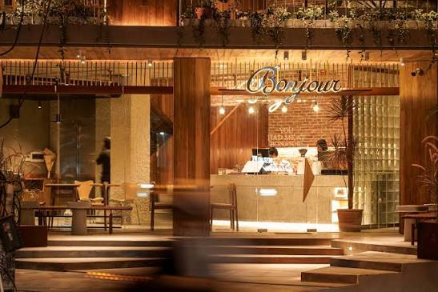
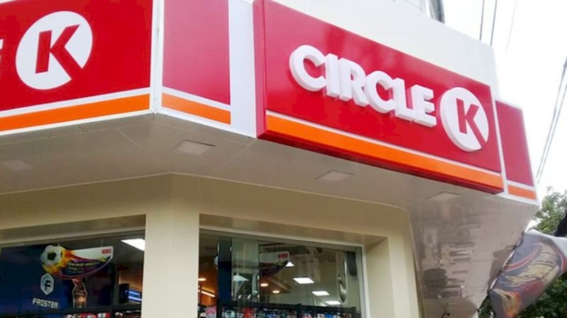

Trong bài
Một chuyến tham quan sẽ trọn vẹn hơn khi bạn biết mình có thể ăn gì, uống cà phê ở đâu hay tìm những tiện ích cần thiết tại khu vực lân cận. Nằm tại ngõ 275 Âu Cơ, Hà Nội, Bảo tàng Văn học Việt Nam có nhiều lựa chọn ăn uống và cà phê trong khu vực lân cận. Nếu đang lên kế hoạch ghé thăm bảo tàng, hãy lưu lại những gợi ý dưới đây để chủ động sắp xếp thời gian trước và sau chuyến đi.
1. Ăn gì sau chuyến tham quan?
Một gợi ý dành cho người yêu thích ẩm thực chay là Veggie Castle, nằm tại số 2, ngõ 275 Âu Cơ. Địa điểm này nằm ngay trong ngõ có Bảo tàng Văn học Việt Nam, thuận tiện để tìm hiểu thêm nếu bạn muốn lựa chọn một bữa ăn chay trong lịch trình.

Ngoài ra, khu vực Tô Ngọc Vân cũng có các lựa chọn ăn uống như iVegan Hanoi tại số 16 Tô Ngọc Vân và Eggmong Sandwiches tại số 26 Tô Ngọc Vân. Đây là những địa chỉ có thể tham khảo nếu bạn muốn tìm một bữa ăn hoặc món ăn nhanh quanh khu vực.
Thông tin về thực đơn, giá cả và giờ hoạt động có thể thay đổi. Vì vậy, hãy kiểm tra thông tin mới nhất của từng địa điểm trước khi ghé thăm.
2. Tìm một quán cà phê để nghỉ chân
Nếu muốn dành thêm thời gian trò chuyện, đọc sách hoặc thư giãn sau chuyến tham quan, những quán cà phê quanh bảo tàng là lựa chọn đáng cân nhắc. Khu vực Tô Ngọc Vân có một số địa điểm nằm trong khoảng cách vài trăm mét tính từ ngõ 275 Âu Cơ, giúp bạn có thêm lựa chọn mà không cần di chuyển quá xa.

Bonjour Cafe tại số 11 Tô Ngọc Vân là một địa chỉ có thể tham khảo cho nhu cầu uống cà phê. Theo thông tin danh bạ địa điểm khu vực, quán được ghi nhận phục vụ từ 8 giờ đến 23 giờ hằng ngày; bạn vẫn nên kiểm tra lại giờ hoạt động trước khi đến.
Nếu yêu thích cà phê đặc sản, bạn có thể tìm hiểu Ella Speciality Cafe Roaster tại số 41/52, ngõ 52 Tô Ngọc Vân. Trong cùng khu vực còn có Oriberry Coffee, được ghi nhận tại số 16 Tô Ngọc Vân. Hai địa chỉ này mở rộng lựa chọn cho những ai muốn thưởng thức cà phê trong không gian ngoài bảo tàng.
3. Những tiện ích nhỏ giúp chuyến đi thuận tiện hơn
Bên cạnh ăn uống, các cửa hàng tiện lợi và dịch vụ thiết yếu cũng có thể hữu ích trong quá trình tham quan. Việc biết trước nơi mua nước, đồ ăn nhẹ hoặc vật dụng cần thiết sẽ giúp bạn chủ động hơn, đặc biệt khi đi cùng trẻ em hoặc tham gia chuyến đi kéo dài nhiều giờ.

Theo thông tin địa điểm được ghi nhận tại khu vực, WinMart+ tại số 19 Tô Ngọc Vân và Circle K tại số 8/52 Tô Ngọc Vân. Đây là những địa chỉ bạn có thể tra cứu thêm khi cần tìm cửa hàng tiện lợi hoặc nơi mua đồ dùng nhanh.
Trước chuyến đi, bạn nên chuẩn bị sẵn nước uống, giấy ăn, thuốc cá nhân cần thiết và các vật dụng phù hợp với thời tiết. Nếu phát sinh nhu cầu mua thêm đồ dùng, hãy xác định địa điểm gần nhất trên bản đồ để tránh mất nhiều thời gian tìm kiếm.
4. Gợi ý sắp xếp lịch trình quanh Bảo tàng Văn học Việt Nam
Để tận dụng thời gian, bạn có thể lựa chọn một lịch trình đơn giản dựa trên nhu cầu của mình.
Hãy ưu tiên khám phá các khu vực trưng bày trước, sau đó lựa chọn một địa điểm ăn uống quanh ngõ 275 Âu Cơ hoặc Tô Ngọc Vân. Cách sắp xếp này giúp bạn dành phần lớn thời gian cho hoạt động tham quan mà không phải liên tục di chuyển giữa nhiều địa điểm.
Sau khi tham quan, cả nhóm có thể chọn một quán cà phê để trò chuyện, chia sẻ những điều ấn tượng và xem lại ảnh đã chụp. Nên thống nhất trước địa điểm gặp nhau để mọi người chủ động về thời gian.
Những điểm hẹn quanh bảo tàng không chỉ giúp bạn giải quyết nhu cầu ăn uống, nghỉ ngơi mà còn góp phần làm chuyến tham quan linh hoạt hơn. Chỉ cần tìm hiểu trước một vài địa chỉ phù hợp, bạn đã có thể chủ động sắp xếp lịch trình và tận hưởng trọn vẹn hơn chuyến ghé thăm Bảo tàng Văn học Việt Nam.
Bảo tàng Văn học Việt Nam